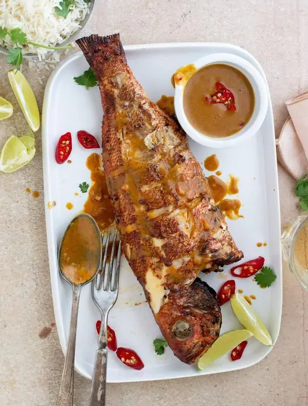

<div class="row font">
    <div class="column">
        <div class="content">

            <div id="header">
                <h3>Samaki (Fish)</h3>
                
            </div>
            
            <div id="description">
                <p>It can either be served dry fried or wet fried.</p>
            </div>
            
            <div id="ingredients">
                <div class="fish">
                    <h4>Ingredients</h4>
                    <ul>
                        <li>Fish, whole or fillets cut into serving portions -- 2 pounds</li>
                        <li>Lime or lemon juice -- 1/4 cup</li>
                        <li>Garlic, minced -- 4 or 5 cloves</li>
                        <li>Salt -- 2 teaspoons</li>
                        <li>Cayenne pepper -- 1/4 to 1/2 teaspoon</li>
                        <li>Oil -- 1/2 cup</li>
                        
                    </ul>
                </div>
            </div>
            
            <div id="steps">
                <h4>Steps</h4>
                <ol>
                    <li>Add the fish, lime or lemon juice, garlic, salt and cayenne pepper to a large, non-reactive bowl and set aside to marinate for 20 to 30 minutes.</li>
                    <li>Heat the oil in a saute pan or skillet over medium-high heat.</li>
                    <li>Remove the fish from the marinade and pat dry with paper towels.</li>
                    <li>Fry the fish in the hot oil until browned on each side.</li>
                    <li>Serve with rice and sukuma wiki.</li>
                </ol> 
            </div>
              
               
            <div id="footer">
                <a href="../index.html">Return to Homepage</a>
            </div>
        </div>
    </div>
</div>


